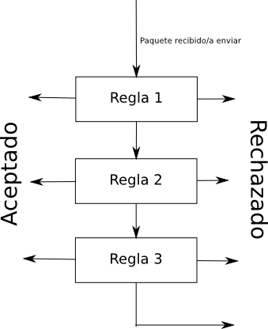
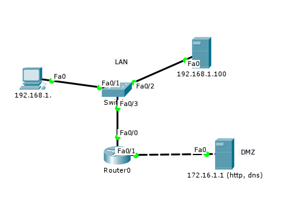
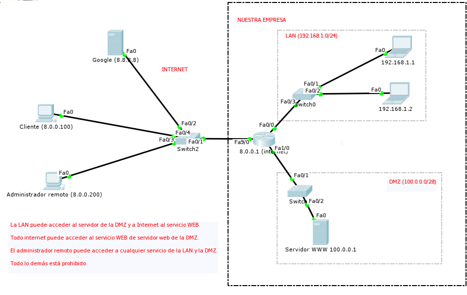

Created: 2016-05-25 mié 09:43
permit, deny) a ejecutar sobre el paquete que cumpla su condición
no access-list <numero>
show ip access-list
show ip interface <interfaz>
Es necesario mirar el apartado Inbound y Outbound
interface <interfaz> ip access-group <numero ACL> <out o in>
interface <interfaz> no ip access-group <numero ACL> <in o out>
access-list access-list-number {permit|deny}
{host|source source-wildcard|any}.
IP y WILDCARD (no IP y máscara). El WILDCARD es la máscara de red con ceros y unos invertidos.
192.168.1.0/24 se especifica como 192.168.1.0 0.0.0.255192.168.1.1192.168.1.1 0.0.0.0any0.0.0.0 255.255.255.255
Se desea que la red 10.0.0.0/15 no sea enrutada, excepto el equipo 10.0.1.1, que es del administrador.
Permitir el host 10.0.1.1
access-list 1 permit host 10.0.1.1
Prohibir la red 10.0.0.0/15
access-list 1 deny 10.0.0.0 0.1.255.255
Permitir el resto de redes
access-list 1 permit any
Explicitar la regla final de denegación (va a estar de todas formas, pero ayuda a no olvidarse de ella)
access-list 1 deny any
Asociar esta ACL a la interfaz de entrada de la red 10.0.0.0/15
interface Fa0/0 ip access-group 1 in
Pueden hacer referencia a otras características del paquete:
access-list access-list-number [dynamic dynamic-name [timeout minutes]]
{deny | permit} protocol source source-wildcard destination destination-wildcard
[precedence precedence] [tos tos] [log | log-input]
[time-range time-range-name][fragments]
access-list access-list-number [dynamic dynamic-name [timeout minutes]]
{deny | permit} icmp source source-wildcard destination destination-wildcard
[icmp-type [icmp-code] | [icmp-message]] [precedenceprecedence] [tos tos]
[log | log-input] [time-range time-range-name][fragments]
access-list access-list-number [dynamic dynamic-name [timeout minutes]]
{deny | permit} tcp source source-wildcard [operator [port]]
destination destination-wildcard [operator [port]] [established]
[precedence precedence] [tos tos] [log | log-input]
[time-range time-range-name][fragments]
access-list access-list-number [dynamic dynamic-name [timeout minutes]]
{deny | permit} udp source source-wildcard [operator [port]]
destination destination-wildcard [operator [port]]
[precedence precedence] [tos tos] [log | log-input]
[time-range time-range-name][fragments]
192.168.1.0/24 (LAN) y 172.16.1.0/24 (DMZ). Se desea que:
53 (DNS)
Esta ACL debe colocarse en la tarjeta de la LAN, sentido inbound.
access-list 100 deny icmp any any access-list 100 permit udp any any eq domain access-list 100 permit tcp any any access-list 100 deny ip any any interface Fa0/0 ip access-group 100 in
Esta ACL debe colocarse en la tarjeta de la LAN, sentido outbound
access-list 101 permit udp any eq 53 any access-list 101 permit tcp any any established access-list 101 deny ip any any interface Fa0/0 ip access-group 101 out

fa9/0 8.0.0.1/8Fa1/0 100.0.0.14/28Fa0/0 192.168.1.254/24100.0.0.1/288.0.0.200